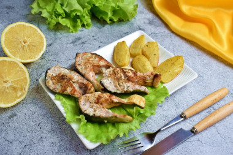
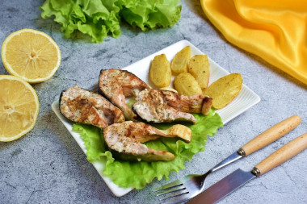

Інгрідієнти:
1)Форель 2шт.;
2)Олія 4 стол.лж.;
3)Часник 2 зубч.;
4)Лимон 0,5 шт.;
5)Кріп 10 гр.;
6)Сіль,перець за смаком;
Спосіб приготування:
1)Рибу необхідно спочатку розморозити. Краще робити це у холодильнику. Так риба збереже соковитість та правильну структуру. Я поміщаю рибу в холодильник і залишаю на ніч для розморожування. Рибу випатрайте і промийте. Посоліть і поперчіть зовні та всередині. Зі спеціями не переборщіть, щоб форель не втратила свій справжній смак;
2)Дно форми для запікання застелите фольгою і викладете на неї рибу. Полийте олією;
3)Лимон наріжте тонкими скибочками, часник - невеликими шматочками. Змастіть рибу часником і викладіть на неї скибочки лимона. Можна за бажанням разом із рибою запекти Ваші улюблені овочі;
4)Щільно загорніть тушки форелі у фольгу. Запікайте рибу приблизно 15 хвилин|мінути| при температурі 200 °С. Потім розгорніть і запікайте ще 5-10 хвилин|мінути| до рум'яної скоринки. Часу може знадобитися трохи більше або менше орієнтуйтеся по духовці. Готову рибу посипте свіжим подрібненим кропом або будь-якою іншою зеленню, на Ваш смак. Форель запечена цілком у духовці готова.Смачного!
Time for better fish
Стейк з форелі на пательні


Інгрідієнти:
1)Стейк з форел1 1кг.;
2)Олія 20мл.;
3)Сіль 8 гр.;
4)Цукор 10 гр;
5)Розмарин свіжий 20 гр.;
6)Тимьян, чабрец 20 гр.;
7)Перець,лимон,зелень
за смаком;
Спосіб приготування:
1)Для цієї страви знадобиться тільки рибне філе, яке необхідно нарізати на стейки приблизно однакового розміру та товщини не більше 2 см.Рибу потрібно розморозти при кімнатній температурі;
2)Сковороду з антипригарним покриттям поставити на вогонь, налити в неї зовсім небагато олії без запаху і нагріти. Потім кинути в розпечену олію гілочки свіжого розмарину та чебрецю.Прогріти спеції протягом однієї хвилини;
3)Далі, не виймаючи розмарин та чебрець, покласти в сковороду стейки форелі. Зверху на рибу посипати суміш із солі, цукру та чорного перцю. Обсмажити форель з одного боку до рум'яного кольору протягом 3-4 хвилин і перевернути стейки на інший бік. Знову приправити рибу спеціями, що залишилися, і підсмажити стейки з іншого боку ще близько 3 хвилин до апетитної золотистої скоринки;
4)Після чого накрити сковороду кришкою, зменшити вогонь і готувати рибу протягом 3-4 хвилин. Перевірити рибні стейки на готовність – для цього проткнути їх гострим кінцем вилки чи ножем. Рідина, що виходить із риби, повинна бути прозорою. Якщо сік риби каламутний, значить риба ще сира і її потрібно досмажити;
5)Викласти рибу на тарілку. Прикрасити рибу часточками лимона та свіжою зеленню;
6)Смачного!
Time for better fish
Горбуша смажена на пательні
 

Інгрідієнти:
1)Горбуша 600 гр.;
2)Олія 20мл.;
3)Лимон 0.3шт.;
4)Сіль,спеції
за смаком;
Спосіб приготування:
1)Тушку риби можна розрізати вздовж на 2 частини або нарізати стейками, завтовшки 2-3 см. Я використовую прованські трави.Кожен шматочок трохи збризкайте соком лимона;
2)Потім посипте рибу з двох сторін невеликою кількістю солі та спеції. Залишіть її хвилин на 15, щоб вона трохи промаринувалась;
3)Сковороду гриль поставте на вогонь та розігрійте до гарячого стану. Трохи змастіть сковороду олією. Викладіть на гарячу сковороду підготовлені рибні стейки та обсмажте їх по 2-3 хвилини з кожного боку;
4)Якщо шматочок риби ще відділяється від сковороди, вона ще готова. Зачекайте ще трохи. Добре смажена риба легко відходить від сковороди;
5)Готову рибу подавайте відразу ж у гарячому вигляді. горбуша на сковороді гриль дуже смачна! Доповніть стейки зеленню, свіжими овочами чи запеченою картоплею. Смачного!;